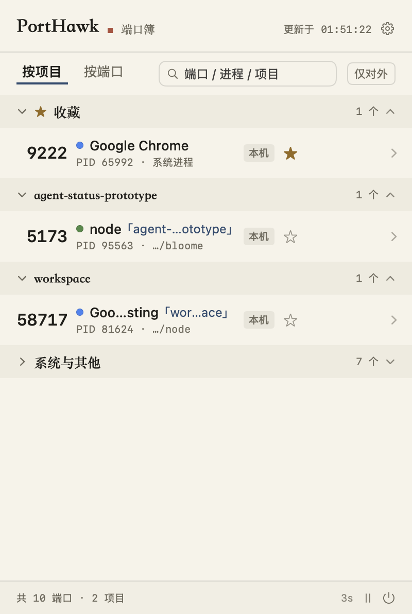
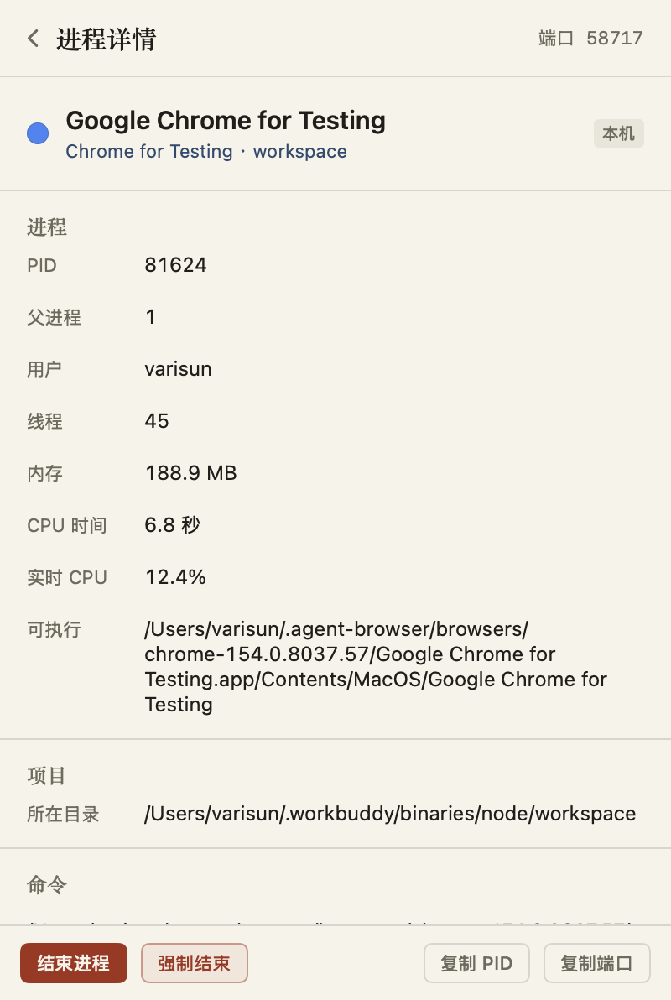
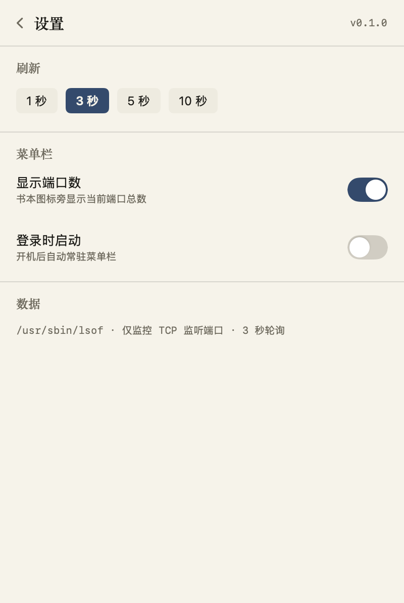

01项目归属
读取进程工作目录自动推断项目，「按项目 / 按端口」两种视图切换，开发服务器不再是无名之辈。
macOS · menu bar · native SwiftUI
PortHawk 是常驻菜单栏的端口账簿：谁在监听、属于哪个项目、会不会被局域网看到， 3 秒一刷，一眼见底。整个应用约 1 MB，无 Electron、无后台守护。

读取进程工作目录自动推断项目，「按项目 / 按端口」两种视图切换，开发服务器不再是无名之辈。
点开任意一行：完整命令行、可执行路径、用户、线程、内存与实时 CPU%，尽在一页。
悬停即出「结束」，两步确认防误触；结束中的行被一道朱砂线划掉，像账簿上的批注。
常用端口点星收藏；空闲时显示淡墨占位行，被陌生进程占走时菜单栏亮圆点、行盖「占」印。
监听 0.0.0.0 的端口标赭色「对外」，「仅对外」一键过滤，局域网可达的服务无处藏身。
原生 SwiftUI 菜单栏应用，约 1 MB 二进制；启动即扫描，失败保留旧账，绝不假装没有端口。


推荐终端一条命令——自动下载最新版装入「应用程序」，无需理会 Gatekeeper：
curl -fsSL https://volcanicll.github.io/PortHawk/install.sh | bash
xattr -cr /Applications/PortHawk.app 再打开喜欢源码构建？git clone 后执行 ./build.sh，只需要 Command Line Tools。